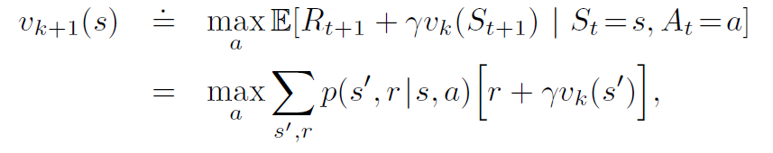

The main idea is that we learn by interacting with our environment. RL tries to map situations to action. The agent’s goal is to maximise a reward. We don’t tell the agent which action to take, or even which action has higher reward (beyond an estimate). The agent must try different actions on its own and learn.
RL involves interaction between an active decision-making agent, and ts environment. The agent is always trying to seek a goal (or mazximize reward), even thought the environment is uncertain.
Exploration is any action that lets the agent discover new features about the environment, while exploitation means capitalizing on the information we have already learned.
If the agent continues to exploit only past experiences, it is likely to get stuck in a suboptimal policy.
On the other hand, if it continues to explore without exploiting, it might never find a good policy.
Policy is how the agent behaves. It is a mapping of state to action, i.e, it tells the agent what action to perform, based on the state of the environment.
Reward signal is the goal of the RL agent. Whenever the agent takes an action, the environment gives it a reward. The agent’s goal is to maximize its long term reward.
Reward signal is the basis through which we change the policy. If the policy told us to do an action x, but that action resulted in a low (or negative) reward, then we may change the policy not to suggest x in that situation.
Reward may be a function of the state and the action taken.
Reward signal gives us the immediate reward. Value function tells us the long term reward of a particular state. The value of a state is the total amount of reward an agent can accumulate in the future, if it starts at that state.
Mimics the behavior of the environment. It lets the agent guess how the environment will react to a particular action. Using the model, the agent can predict the reward and next state, if it takes action x from its current state. Models are used for planning - i.e, the agent uses the model to consider many future situations before it actually experiences them.
Models are optional - not all RL agents will use a model. Those using a model are called model-based, and those without models are called model-free. Model-free methods are trial-and-error.
At time \(t\),
\[ q_*(a) = \mathbb{E}[R_T| A_t=a] \]
Ideally, \(Q_t(a)\) should be as close to \(q_*(a)\) as possible.
Greedy approach - always take the action with the highest \(Q\) value.
\(\epsilon\)-greedy approach - At each step, with probability \(\epsilon\) take a non-greedy action, i.e, take the action which does NOT have the highest estimated value.
Methods that estimate the value of actions, and then use those estimates to choose which action to perform, are called action-value methods
A way to estimate \(Q_t(a)\) is to average all the actual rewards received. This is the sample-average method
\(1_{predicate}\) represents a random variable that is 1 when \(predicate\) is true, and 0 when it’s false.
If denominator is 0, we can define \(Q_t(a)\) as some fixed value, such as 0.
\[ Q_n = \frac{1}{n-1}\sum_{i=1}^{n-1}R_i \]
Instead of storing all the \(R_i\) values, we use incremental updating. The above formula can easily be reduced to : \[ Q_{n+1} = Q_n + \frac{1}{n}[R_n-Q_n] \] This is a frequently occurring format in RL. General form: \[ NewEstimate \leftarrow OldEstimate + StepSize[Target-OldEstimate] \] \(StepSize\) is sometimes denoted by \(\alpha\) or \(\alpha_t(a)\)
Rewards may change during the course of the problem. These problems are called non-stationary. Incremental updating will not work for those. In these cases, we attach more weight to more recent rewards than rewards received a long time ago. For e.g, if a particular action gave us reward of 1 during the starting of the problem, but more recently it’s been giving us reward of 10, our estimated reward of it should lean more towards 10.
We do this by fixing the value of \(\alpha\) , instead of above where it changed according to \(n\).
\[ Q_{n+1} = Q_n + \alpha[R_n-Q_n] \]
where \(\alpha \in(0,1]\) is constant. \(Q_{n+1}\) becomes a weighted average of all past rewards and the initial estimate \(Q_{1}\)
\[Q_{n+1} = Q_n + \alpha[R_n-Q_n]\]
Recursing the formula, we get \[ Q_{n+1} = (1-\alpha)^nQ_1 + \sum_{i=1}^{n} \alpha(1-\alpha)^{n-i}R_i \] Past rewards (with lower \(i\)) are multiplied with higher powers of a number that’s less than 1, i.e, they get less weightage.
This is called exponential recency-weighted average
\[ Pr\{A_t=a\}=\pi_t(a)=\frac{e^{H_t(a)}}{\sum_{b=1}^ke^{H_t(b)}} \]
\(\pi_t(a)\) represents the probability of taking an action \(a\) at time \(t\). Initially, \(H=0\) (or some other constant) for all \(a\)
On each step, after selecting \({A_t}\) and receiving reward \(R_t\),we update action preferences by: \[ H_{t+1}(A_t)=H_t(A_t)+\alpha(R_t-\bar{R_t})(1-\pi_t(A_t)) \] and \[ H_{t+1}(a)=H_t(a)-\alpha(R_t-\bar{R_t})\pi_t(a) \] for all \(a \ne A_t\)
\(\bar{R_t}\) is the average of all rewards received until (and including) time-step \(t\). If the reward received in current step is higher than the average, the preference for \(A_t\) goes up, otherwise it goes down.
\[ p(s',r | s,a) = Pr\{S_t=s',R_t=r | S_{t-1},A_{t-1}=a\} \]
\(p\) defines the probability of receiving reward \(r\) and getting to a new state \(s'\), by performing action \(a\) on a previous state \(s\).
Sum of \(p\) for all \(s'\) and \(r\) is 1.
In MARKOV processes, the current state and action is enough to completely characterize the environment. I.e, the reward received and next state only depend on the current state and action performed, not on any previous state.
We can see that, \[ v_{\pi}(s) = \sum_a \pi(a|s)q_{\pi}(s,a) \]
\[ q_{\pi}(s,a) = \sum_{s',r} p(s',r|s,a)(r+\gamma v_{\pi}(s')) \]
Combining these two equations, we get
\[ v_{\pi}(s) = \sum_a \pi(a|s)\sum_{s',r} p(s',r|s,a)(r+\gamma v_{\pi}(s')) \]
(Note that the 2 summations are NOT independent of each other.)
\[ q _{\pi}(s,a) = \sum_{s',r} p(s',r|s,a)(r+\gamma\sum_{a'} \pi(a'|s')q_{\pi}(s',a')) \]
\[ v_*(s) = \max_{\pi}v_{\pi}(s), \forall s \]
\[ q_*(s,a) = \max_{\pi}q_{\pi}(s,a), \forall s,a \]
Intuitively, the best value of a state is equal to the expected return of the best action from that state. I.e,
\[ v_*(s) = \max_{a}q_{\pi_*}(s,a) \] Expanding and using the recursive formula, we get
\[ v_*(s)= \max_a \sum_{s',r}p(s',r|s,a)[r+\gamma v_*(s')] \]
\[ q_*(s)= \sum_{s',r}p(s',r|s,a)[r+\gamma \max_{a'}q_*(s',a'))] \]
Using old values to compute new values. That’s it.
The algorithm is as follows:
This will always converge, given that the policy \(\pi\) is proper, i.e, we can reach a terminal state from any state.
We calculated a new \(v_{\pi}\) using policy evaluation. Now we want to see if we should change the policy as well. For e.g, if at state \(x\) we were taking action \(a\) because it led to state \(y\). Earlier , \(v_{\pi}(y)=5\), but after evaluation it’s value has dropped to \(3\). So should we still take action \(a\), or should we change it to something else?
A simple update rule is: \[ \pi'(s) = \text{arg}\max_a q_{\pi}(s,a) \] i.e, \(\pi'(s)\) should be whichever \(a\) gets the maximum reward. We can also write it as: \[ \pi'(s) = \text{arg}\max_a \sum_{s',r}p(s',r|s,a)[r+\gamma v_{\pi}(s)] \] This is one-step lookahead
Policy iteration consists of two steps - Policy Evaluation, followed by Policy Improvement. Both of these are done over and over again till convergence.
\(E\) represent policy evaluation. \(I\) represents policy improvement.

The algorithm is given below
Asynchronous Dynamic Programming (ADP) in reinforcement learning is a variant of dynamic programming that aims to improve the computational efficiency of solving Markov Decision Processes (MDPs), which are commonly used in reinforcement learning for modeling sequential decision-making problems. ADP differs from traditional dynamic programming approaches in the following ways:
Parallelism: In traditional dynamic programming, computations are performed sequentially, which can be computationally expensive for large MDPs. In contrast, ADP employs parallelism to speed up the process. It allows multiple updates to the value function or policy to occur concurrently, taking advantage of modern multi-core processors or distributed computing environments.
Asynchronous Updates: In ADP, updates to the value function or policy do not follow a strict, synchronous pattern as in traditional dynamic programming. Instead, updates occur asynchronously, meaning that different parts of the state or action space are updated independently and possibly at different times. This asynchrony can lead to faster convergence because the algorithm focuses on states or actions that require immediate attention.
Prioritization: ADP methods often prioritize state or action updates based on their importance or relevance to the learning process. States or actions with higher estimation errors or greater potential for learning are updated more frequently than others. This prioritization helps allocate computational resources effectively, which is especially useful in scenarios with large state or action spaces.
Online and Offline Variants: ADP can be implemented in both online and offline settings. In online ADP, updates are made as the agent interacts with the environment, allowing for real-time learning. In offline ADP, the agent learns from pre-collected data, making it suitable for batch learning.
Sample Efficiency: ADP methods often focus on improving sample efficiency, which means achieving good learning performance with fewer interactions with the environment. This is crucial in applications where collecting data is costly or time-consuming.
Asynchronous methods, such as Asynchronous Advantage Actor-Critic (A3C) and asynchronous variants of Q-learning, can be valuable for addressing exploration challenges in reinforcement learning, particularly in domains with large state or action spaces. Here’s how asynchronous methods can help:
Exploration Efficiency: Asynchronous methods can explore the environment more efficiently than their synchronous counterparts. In A3C, for example, multiple agents (threads) explore the environment concurrently. Each agent interacts with the environment independently, increasing the diversity of experiences and improving the chances of discovering optimal or near-optimal policies.
Faster Exploration: In large state or action spaces, it can take a long time for a single agent to explore and discover the best actions. Asynchronous methods enable multiple agents to explore different parts of the state or action space simultaneously, accelerating the exploration process and reducing the risk of getting stuck in suboptimal solutions.
Exploration Strategies: Asynchronous methods can implement different exploration strategies for each agent. Some agents may prioritize exploration (e.g., using epsilon-greedy exploration), while others may focus on exploiting the current knowledge (e.g., following a policy). This diversity in strategies can improve exploration and learning in complex environments.
Experience Sharing: Agents in asynchronous methods can share their experiences with each other. This sharing of experiences allows the network to learn from a broader range of data and can help in generalizing across different parts of the state space.
Parallelism: Parallelism in asynchronous methods enables the collection of more data in a shorter time, which can be especially important when exploration is costly, risky, or time-consuming. This increased data throughput can lead to faster learning and better exploration.
Asynchronous Prioritization: Some asynchronous methods, like Prioritized Experience Replay, prioritize experiences based on their potential for learning. This prioritization ensures that the most informative experiences are replayed more frequently, aiding exploration by focusing on critical areas of the state or action space.
Generalized Policy Iteration (GPI) is the idea of letting policy-eval and policy-improvement processes interact , independent of the details of the two processes. Almost all RL methods can be described as a GPI.
The evaluation and improvement processes in GPI can be viewed as both competing and cooperating. They compete in the sense that they pull in opposing directions. Making the policy greedy with respect to the value function typically makes the value function incorrect for the changed policy, and making the value function consistent with the policy typically causes that policy no longer to be greedy. In the long run, however, these two processes interact to find a single joint solution: the optimal value function and an optimal policy.